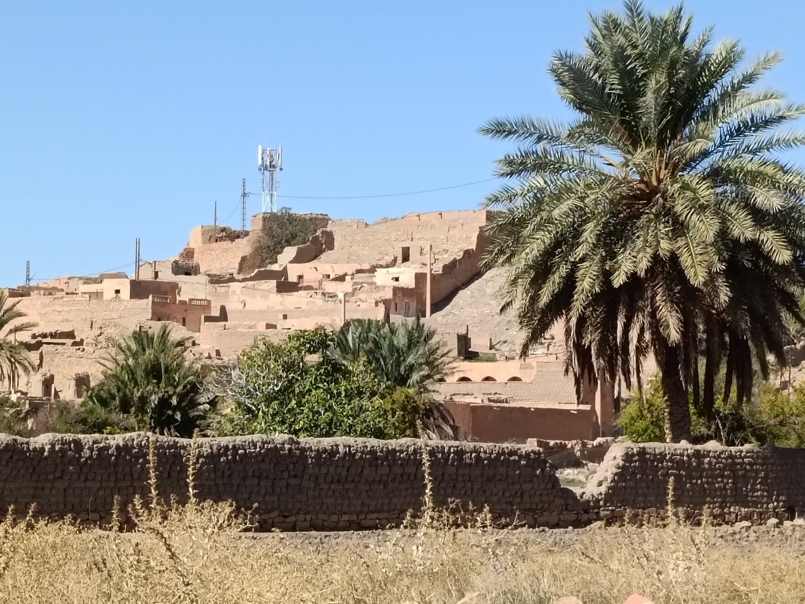

Village de Tadjmout
Sous le soleil du Sud,
Tadjmout s’étire,
paisible et fière,
Ses murs d’argile,
couleur de terre,
Gardent l’écho
des jours perdus.
Les palmiers dressent
leurs doigts verts,
Offrant l’ombre
aux pierres muettes,
Et dans l’air pur,
la brise s’arrête
Sur un parfum
de sable et d’hier.
Les maisons dorment,
serrées,
anciennes,
Comme un poème
sans encre,
sans fin,
Le temps y marche
à pas humains,
Et chaque mur
retient la peine.
Au loin,
une tour de fer s’élève,
Signal du monde,
froid et haut,
Mais dans ces ruelles,
le rêve
Parle encore
en dialecte chaud.
Ô Tadjmout,
village d’attente,
Ton silence
a goût d’éternel,
Et ton ciel,
vaste et sans querelle,
Raconte l’âme des vivants
qui chantent.
Djamel Metref
At Yenni le 19 octobre 2025

← Tous les poèmes
Village de Tadjmout
Carnets de voyages · Nature et écologie